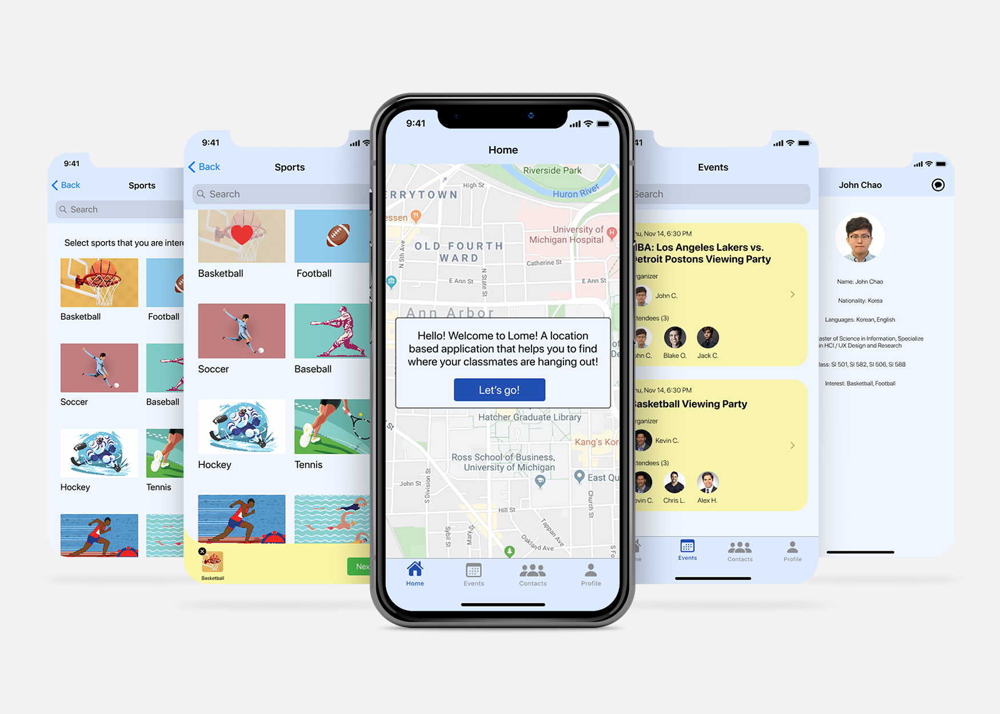
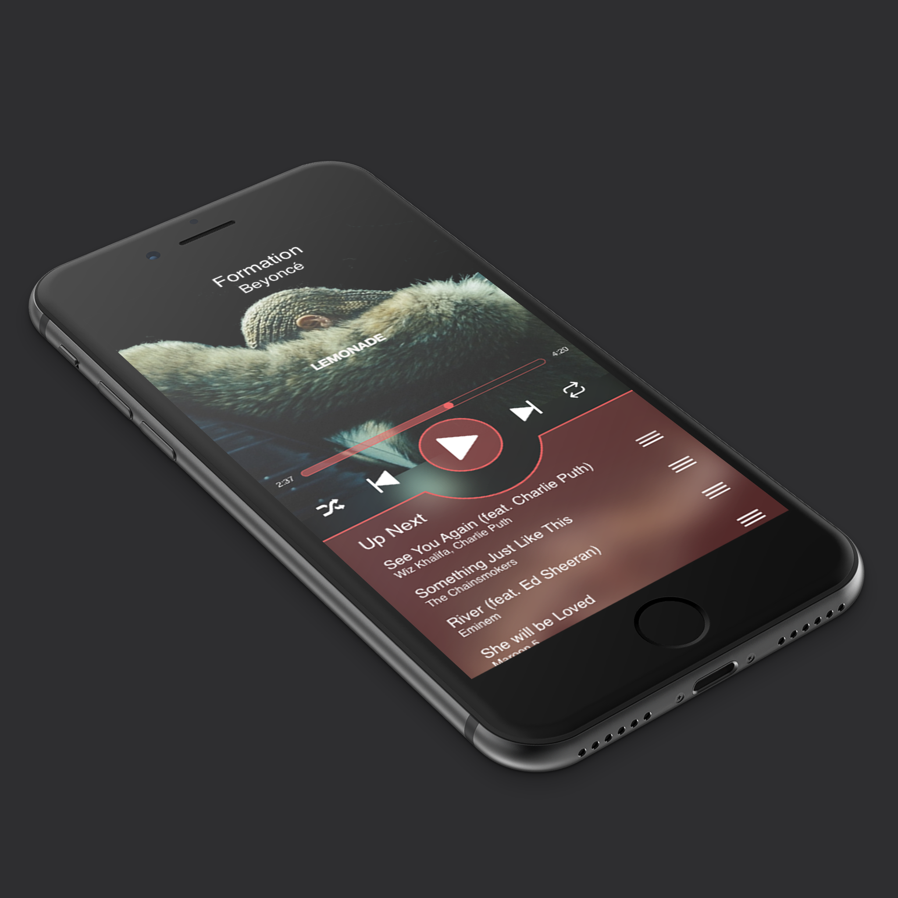
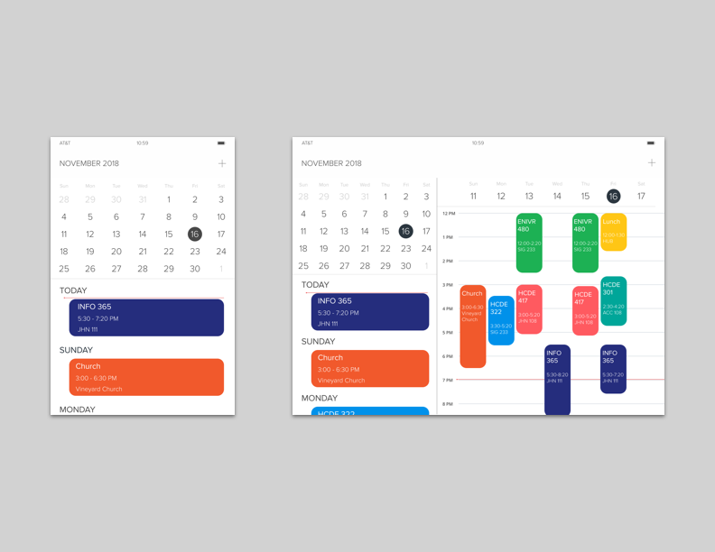
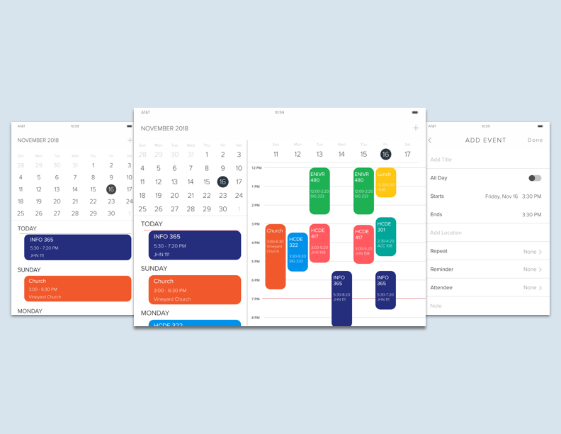
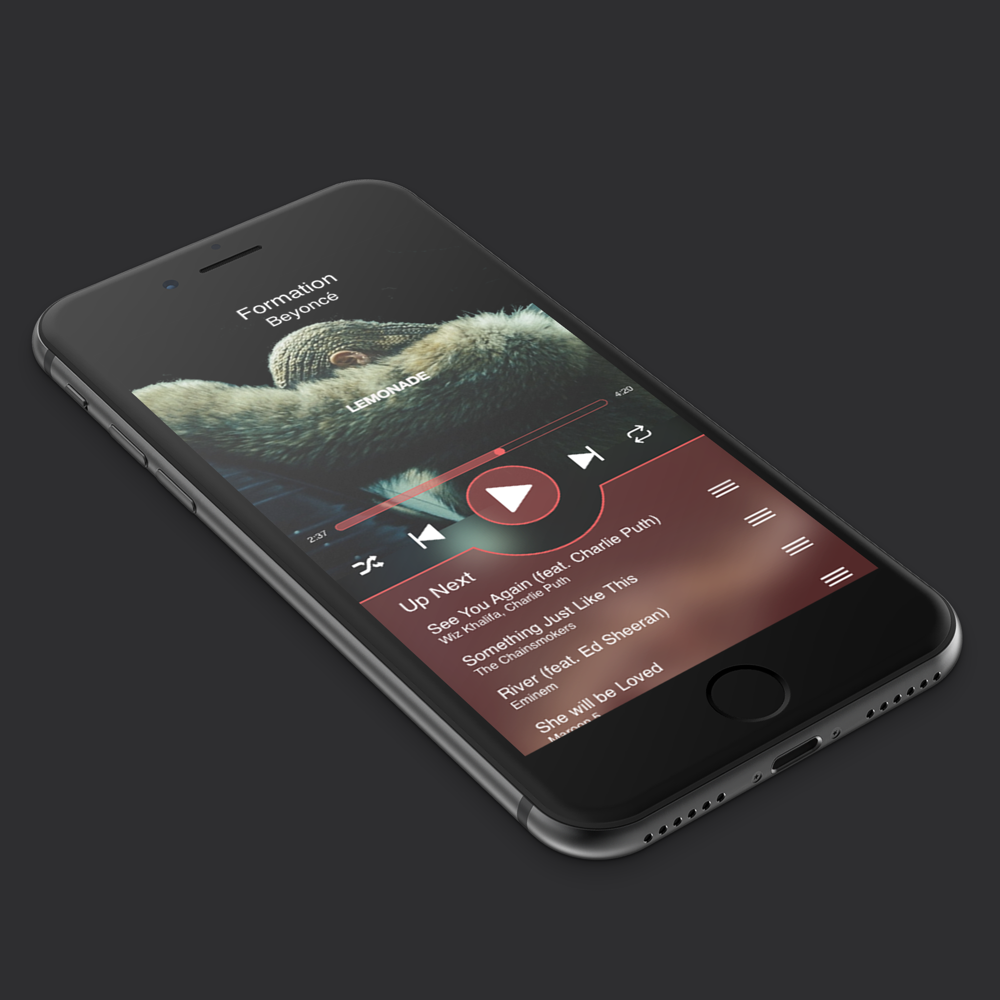
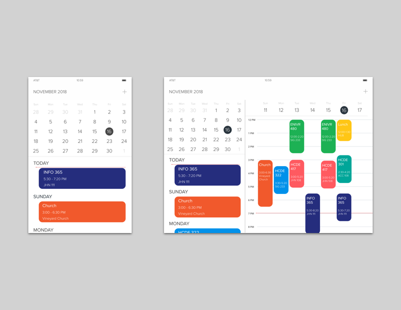
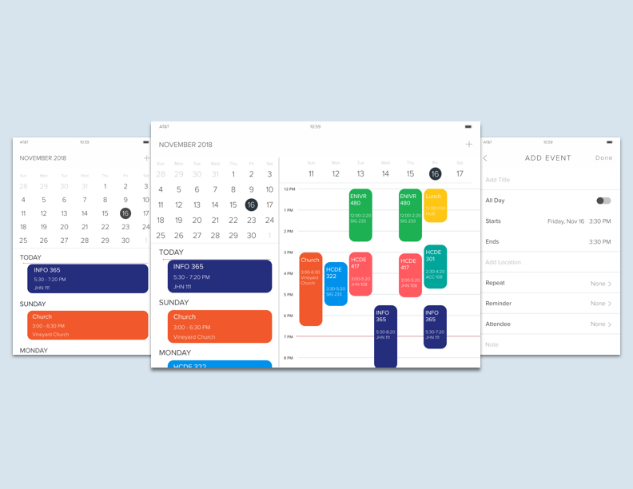
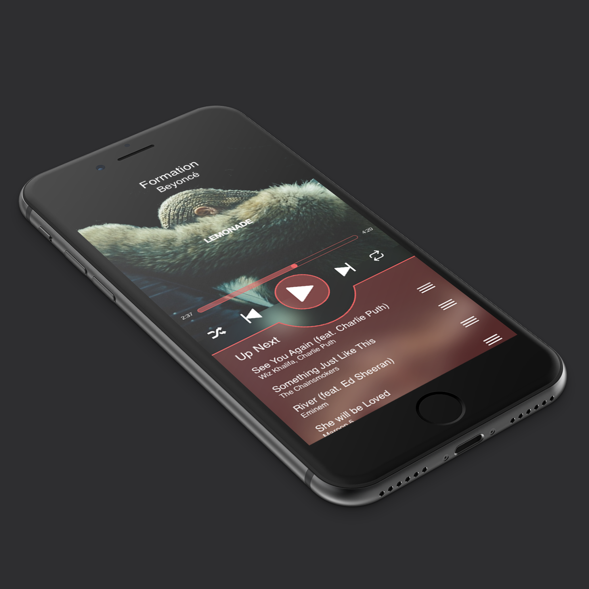
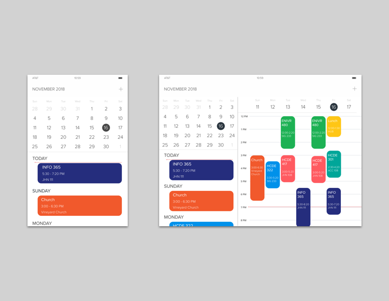
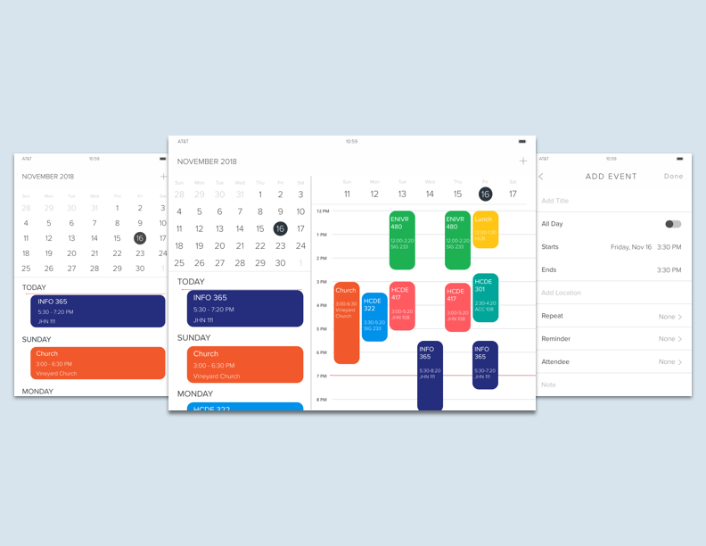

User Experience Design
As a designer, I believe that my strengths are: knowledgable, collaborative, responsible, empathy, and creative. I understand most of the whole end to end design process as I have taken various UX and HCI courses in my undergrad and graduate school. I collaborate with a team to help solve the common goal within the project. I take responsibility to make sure everything is organized and going in the right direction. I emphasize and understand users’ needs. I generate and ideate product ideas using hand sketches. I design detail interaction flow and wireframes using Sketch and Figma.


 







